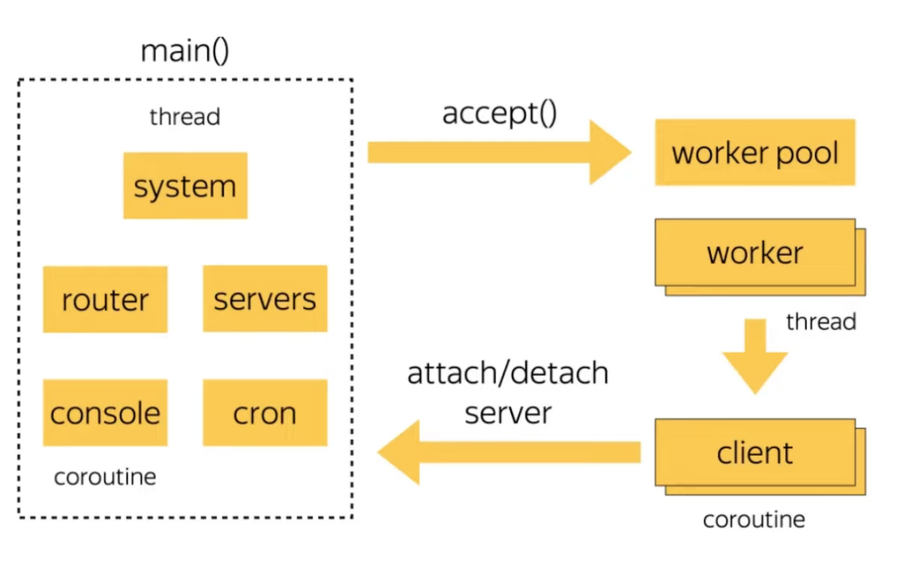

- Andrey has worked on the database team at Yandex. Also a Postgres contributor since 2016.
- He has worked on a disaster recovery system for DBs: https://github.com/wal-g/wal-g & a stateless postgres query router: https://github.com/pg-sharding/spqr for sharded pg.
- Oddysey was developed for Yandex services based on Postgres.
- Yandex
- Yandex.Mail
- ~ half a billion email. inboxes
- 1+ trillion+ rows, 1+ million RPS
- Yandex.Cloud
- ~10+ PB of Postgres
- And other services like taxi, maps, weather forecast, car-sharing, food delivery etc.
- Yandex.Mail
- Typical Postgres Cluster
- 1 primary node, 3 replica nodes, 2 quorum replicated nodes (which only process read-only queries)
- no analytics on postgres, use logical replication to copy the data to Clickhouse or Greenplum
- collect WAL & backups & store in S3-compatible Yandex Object Storage
Why Pool Connections?
./pgbench -j8 -c 10000 -T 60 postgrescis for no. of concurrent clients simulatedjis no. of threads- For out of the box pg, on varying
c, (ignoring initial connection time)-c 10000=> 86 TPS-c 1000=> 548 TPS-c 100=> 996 TPS
- Sidenote: Sometimes setups w/o connection pooling can be faster when the client & server app are on the same machine so not much time is lost due to network latency.
- 1 backend (server connection) == 1 (unix) process
- Each process has its own cache for relations (tables, columns etc.), compiled PL/pgSQL data, query plans
- OLTP throughput
- Inside the postgres core, many algorithms depend on number of connections
- This was probably the code shown in the slide: https://github.com/postgres/postgres/blob/eae7be600be715b2f393b018fc4b98c5b89296da/src/backend/storage/ipc/procarray.c#L1474-L1540
- MVCC snapshot traverses the array of connections & checks if the connection is active & analyses it’s state.
- Memory consumed by each connection is pre-allocated on start.
- Many small algorithms depend on the size of proc array so we always want to make the proc array smaller to make those algorithms faster.
- Related work
- Performance is pg degrades even with idle connections.
- The idea of connection pooling is to reduce the number of connections to the global optimum for the database.
- Sidenote: You can set a connection limit for DB users in Postgres.
- Where can we pool connection?
- Application-side
- B/w app & DB
- Built-in DB
- Enterprise MySQL has connection pooler built-in.
- Combinations
- In multi-AZ or sharded setups, you can end up w/ a lot of connections.
./pgbench -j8 -c 10000 -T 60 postgrestakes ~15 seconds just for the initial connection time.- Say we’ve 30K inbound connections & some network switch is rebooted, we’d have to re-establish all those connections which would cost us ~10mins ??? of CPU time just due to some network glitch.
- Q/A : How frequently can this (network connection breaking) happen?
- At Yandex, switches are updated every month in waves.
- Connections b/w multi-AZ are routed through external internet which isn’t predictable.
- Cost of having a server connection
- TLS Handshake: upto 100ms
- Pagefaults for fork(): upto 100ms
- Procarray, Snapshot etc. costs on each txn
- Networking code on client’s side
- Copying system catalog for each connection is cache unfriendly
What We Tried
- These are some of the proxy poolers that for Postgres:
- Crunchy-Proxy
- Only session pooling
- PgBouncer
- Txn. pooling
- Used by most cloud providers
- PgCat
- SPQR
- Crunchy-Proxy
- Yandex used PgBouncer earlier.
- Issues w/ PgBouncer
- Txn. mode limitations
- Can’t use objects that survive through txn boundaries
- Session params (eg. lock timeouts)
- Temp tables
- Advisory locks
- Prepared statements
- Can’t use objects that survive through txn boundaries
- PgBouncer connections still cost us
- TLS handshake isn’t free
- PgBouncer processes connections in FIFO order
- Most clients impose 3s connection timeout
- Inversion of priorities
- If we’ve >100% utilization, we must not shut service entirely & serve new connections first (because they’ve a better chance of surviving the connection timeout).
- Txn. mode limitations
- HAProxy
- We initially used HAProxy to process traffic through many PgBouncers.
- Didn’t work well because HAProxy didn’t understand Postgres protocol well & used too many PgBouncer connections sometimes.
- Port Reuse
- Then, we tried using Port Reuse (multiple processes bind to the same port) which worked quite well for some time.
- See The SO_REUSEPORT socket option
- Transparent for clients. No extra moving parts.
- But if a PgBouncer gets overloaded, it doesn’t accept new connections.
- Fragmentation of idle connections among PgBouncers.
- Cascading System
- We then used a 2-level cascading system where we had an external array of PgBouncer processes, an internal array of PgBouncer processes & then the Postgres instance.
Client --TLS-> PgBouncers[][][][][][] -> PgBouncers[][] -> Postgres- Still transparent for client & can withstand any load peak.
- Also has control over idle connection count & smooth restarts.
- But, maintenance is difficult (CPU gets saturated) & it didn’t provided any control over distribution of load by instances of PgBouncers.
Features we wanted
- Controllable CPU scaling
- Flexible tuning
- Tracing client session
- Mixed pooling types
- Better error codes forwarding
Odyssey
- Written in C (along with some Assembly). Only dependency is openssl.
- The assembly code is used to save the current state of the client connection & swaps the call stack.
- Building Blocks
- Kiwi
- Machinarium
- Machinarium : Cooperative concurrency framework
- Like a state machine that remembers the state of client & server connection and what to do when the next byte arrives
- Mainly responsible for wakeing up the server thread without using system calls.
- We avoid context swap using syscalls & we avoid using several processes to do multi-tasking. Why??
- Kiwi : Format postgres messages
- Internal Architecture
- 
- We’ve a system thread which is governing other threads.
- After accepting TCP connect, before starting any TLS connection, it bounds client connection to the system process.
- Process subscribes to IO events using epoll & (runs ?) in response to wake up execution of “front-end” code for each client.
- Main thread is responsible for retiring old server connections & running queries on the console database?.
- Multi-threading
- Each OS thread (maps to a Machinarium) has its own context of file descriptors that it must be in response of.
- Details
- Accept(2) in separate thread
- Trying to solve a problem we observed in PgBouncer. We must distribute new connections evenly among all machines.
- Pipelining small packets
- Pack many small packets into a large packet.
- Cache-friendly pipelining
- Trying to connect the client to the same server connection if possible (server connection isn’t busy)
- Accept(2) in separate thread
- Some Odyssey feature
- Enhanced txn pooling
- Cancel queries that no on waits for
- Sidenote:
- Mentioned that he probably wouldn’t add this feature if he was re-writing Odyssey since sometimes you cancel queries that are about to succeed &
CANCELin Postgres creates a new fork. - If you’ve to cancel a lot of small queries, you create a wave of forks to accept cancel request on pg
- Mentioned that he probably wouldn’t add this feature if he was re-writing Odyssey since sometimes you cancel queries that are about to succeed &
- Replication support
- Clients can migrate from cloud managed services
- PgBouncer console compatibility
- Enhanced txn pooling
- Enhanced transaction pooling
- Trying to keep server connection
- Automatic ROLLBACK
- Optimization of parameter setup (SET, DISCARD)
- Protocol-level Prepared Statements support
- Steps: PARSE -> BIND -> DESCRIBE -> EXECUTE -> SYNC
- Prepared Statement is created in the Parse step & is readied for execution using a Bind message.
- See: Message Flow : Extended Query
- Steps: PARSE -> BIND -> DESCRIBE -> EXECUTE -> SYNC
- Prepared statement survive through txn boundaries which is why they’re not compatible with txn pooling in PgBouncer.
- How we solve for this:
- From pg docs:
If successfully created, a named prepared-statement object lasts till the end of the current session, unless explicitly destroyed. (From pg docs)
- Different SQL statements can have the same name in different server connections.
- In Odyssey, we’ve 2 hash-tables
- Client HT: ps_name to sql_hash
- Storage HT: sql_hash to ps_name
- ps_name is Prepared Statement Name
- Odyssey doesn’t issue the PARSE statement initially. In the BIND step,
- Lookup cmd_hash by client_ps_name
- Lookup server_ps_name by cmd_hash
- If it doesn’t exists: PARSE server_ps_name “original SQL cmd from client”
- Actually BIND server_ps_name
- Downsides of this solution:
- Server Prepared statements are allocated forever.
- We don’t allow the server connection to live forever to avoid cache bloat. (expire after 1 hr)
- Mappings (hash-tables) consume RAM.
- Hashing takes some additional time.
- Server Prepared statements are allocated forever.
- From pg docs:
- Standby lag polling
- https://youtu.be/VEYdZL0bU-I?si=wLKlM29xqf0Od4—&t=2816
- Sometimes replicas can show stale data.
- Having a replication lag of more than 1s is usually undesired.
- In Odyssey, you can specify a watchdog query & if this watchdog query returns some value which isn’t acceptable then the client will retry & get other replica which prevents client from seeing stale data.
- Open questions
- Optimum workload : You’ve to specify the no. of concurrent connections for each user at Yandex. We want to be able to do this automatically.
- Read-after-write consistency
- Protocol compression : Compression is currently vulnerable to CRIME attack
- Attempt : Lightweight Sharding via Proxies
- Currently existing sharding solutions are based on custom Plan node which decides which shard to route to. For eg: Citus works this way. A lot of time is consumed in checking the query against the system catalog. A proxy wouldn’t have to do this & could be completely stateless.
- Currently, we rewrote Odyssey in Go (SPQR) to prototype PG sharding.
- Sidenote: Mentioned that the Go prototype isn’t much slower than C.
- Not used in production yet.
- PgCat is another project in Rust attempting to do this.
Q/A
- Did you look into kernel bypass, io_uring w/ socket support etc.? Is it something that would help w/ Odyssey?
- Didn’t look into io_uring but we were thinking about moving closer to kernel.
- We did look into dpdk & didn’t find it to be too much of an improvement as per benchmarks.
- I’m assuming that you never put the proxy in the same box at Yandex.
- We use connection pooler on the same node as the DB & we use it for high-availability fencing too. When we’re unsure if we should accept connections or not, we take down connection poolers so that no client is able to access the DB. It’s faster to kill the Odyssey pooler for maintenance work.